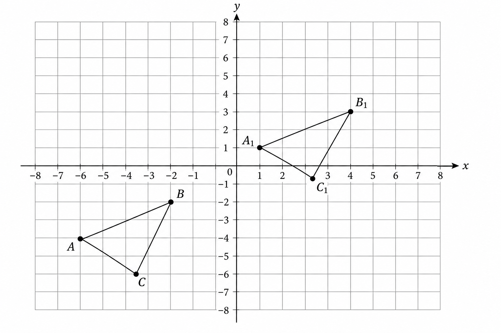
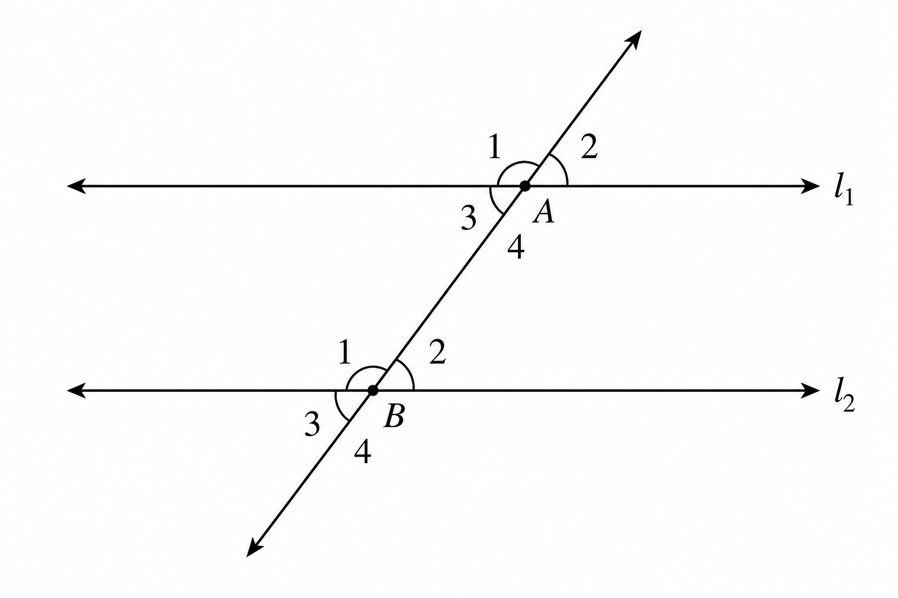
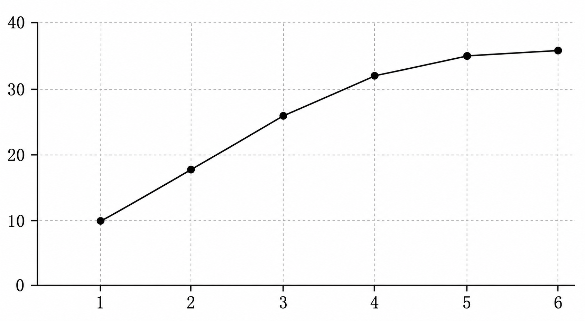

学校 班级 姓名 考号 密封线内不要答题
七年级下册数学模拟试卷
浙教版方向 · 满分 120 分 · 建议用时 100 分钟
姓名：
班级：
得分：
用时：
注意：本卷共三大题，满分 120 分，考试时间 100 分钟。答题时请写出必要步骤，几何题必须写明依据。
一、选择题 共 15 题，每题 3 分，共 45 分
- 下列各组角中，一定互为对顶角的是（ ）
- 若 a ∥ b，直线 c 与 a、b 相交，则同位角（ ）
- 方程 2x - y = 5 的一个解是（ ）
- 计算 a² · a³ 的结果是（ ）
- 下列式子能用平方差公式分解的是（ ）
- 分式 1/(x-2) 有意义的条件是（ ）
- 某组数据的频数直方图中，一个小组的频数是 8，总频数是 40，该组频率是（ ）
- 若 x + y = 7，x - y = 1，则 x 的值为（ ）
- 观察图中的三角形平移，下列说法正确的是（ ）

图 A - 解分式方程时，最后必须检验的原因是（ ）
- 若 (x+2)(x-2)=x²-4，则这里主要使用的是（ ）
- 若分式 (x+1)/(x²-1) 约分，正确的限制条件是（ ）
- 一个多边形的内角和为 900°，这个多边形的边数是（ ）
- 如图 1，a ∥ b，∠1=115°，则与 ∠1 同旁内角互补的角为（ ）

图 1 - 观察图 2，一周阅读人数变化最明显的区间是（ ）

图 2
二、填空题 共 5 题，每题 5 分，共 25 分
- 若 ∠A 与 ∠B 互补，且 ∠A = 72°，则 ∠B = 。
- 二元一次方程组 { x+y=9, x-y=3 } 的解为 。
- 计算：(2a²b)·(3ab³)= 。
- 因式分解：x² - 4x = 。
- 化简：a/(a-1) - 1/(a-1) = 。
三、解答题 共 5 题，每题 10 分，共 50 分
- 10 分 解方程组：{ 2x + y = 11, x - 2y = -2 }。
- 10 分 先化简，再求值：(x+3)(x-3) - x(x-2)，其中 x = -1。
- 10 分 如图，a ∥ b，直线 c 分别交 a、b 于两点。若 ∠1 = 115°，求 ∠2 的度数，并说明理由。
图 3 - 10 分 已知分式方程 2/(x-1) = 3/(x+2)，求 x，并检验。
- 10 分 某班对 40 名学生一周阅读时间进行统计，结果制成折线统计图。根据图回答问题：哪一天阅读人数最多？从周三到周五人数变化趋势如何？请提出一条学习建议。
图 4